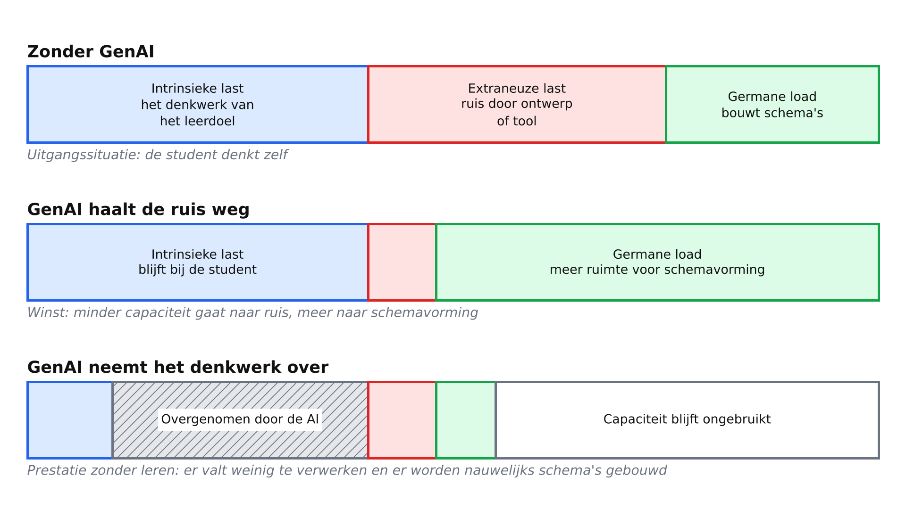
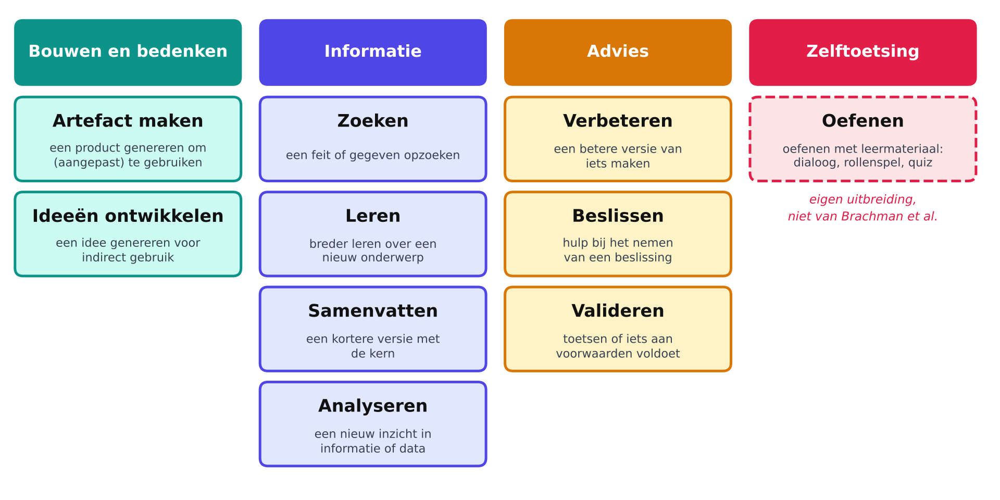
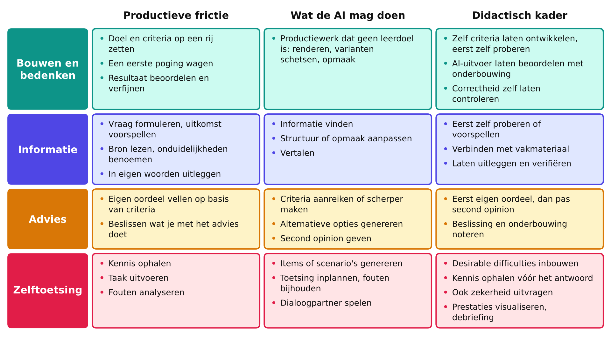

<!DOCTYPE html>
<html lang="en">
<head>
    <meta charset="utf-8" />
    <meta name="viewport" content="width=device-width, initial-scale=1.0, maximum-scale=1.0, user-scalable=no" />

    <title></title>
    <link rel="stylesheet" href="../_shared/e715a0c7082f/dist/reset.css">
    <link rel="stylesheet" href="../_shared/e715a0c7082f/dist/reveal.css" />
    <link rel="stylesheet" href="css/slides-extended.css" />
    <link rel="stylesheet" href="../_shared/e715a0c7082f/dist/theme/simple.css" id="theme" />
    <link rel="stylesheet" href="../_shared/e715a0c7082f/plugin/highlight/zenburn.css" />
    <link rel="stylesheet" href="../_shared/e715a0c7082f/plugin/customcontrols/style.css">


    <script defer src="../_shared/e715a0c7082f/dist/fontawesome/all.min.js"></script>

    <script type="text/javascript">
        function pageInIframe() {
            return (window.location !== window.parent.location);
        }

        let forgetPop = true;
        function onPopState(event) {
            if(forgetPop){
                forgetPop = false;
            } else if( pageInIframe()) {
                parent.postMessage(event.target.location.href, "app://obsidian.md");
            }
        }
        window.onpopstate = onPopState;
        window.onmessage = event => {
            if(event.data == "reload"){
                window.document.location.reload();
            }
            forgetPop = true;
        }

        function fitElements() {
            const itemsToFit = document.getElementsByClassName('fitText');
            for (const item in itemsToFit) {
                if (Object.hasOwnProperty.call(itemsToFit, item)) {
                    const element = itemsToFit[item];
                    fitElement(element, 1, 1000);
                    element.classList.remove('fitText');
                }
            }
        }

        function fitElement(element, start, end) {

            let size = (end + start) / 2;
            element.style.fontSize = `${size}px`;

            if (Math.abs(start - end) < 1) {
                while (element.scrollHeight > element.offsetHeight) {
                    size--;
                    element.style.fontSize = `${size}px`;
                }
                return;
            }

            if (element.scrollHeight > element.offsetHeight) {
                fitElement(element, start, size);
            } else {
                fitElement(element, size, end);
            }
        }

        document.onreadystatechange = () => {
            fitElements();
            if (document.readyState === 'complete') {
                if (pageInIframe() && window.location.href.indexOf("?export") != -1){
                    parent.postMessage(event.target.location.href, "app://obsidian.md");
                }
                if (window.location.href.indexOf("print-pdf") != -1){
                    let stateCheck = setInterval(() => {
                        clearInterval(stateCheck);
                        window.print();
                    }, 250);
                }
            }
        };
    </script>
</head>

<body>
    <div class="reveal">
        <div class="slides"><section data-separator="
?
---
?
" data-separator-vertical="
?
--
?
" data-separator-notes="note:" data-markdown><script type="text/template"><!-- .slide: class="drop" template="" -->
<div class="" style="position: absolute; left: 0px; top: 0px; height: 700px; width: 960px; min-height: 700px; display: flex; flex-direction: column; align-items: center; justify-content: center" absolute="true">

# GenAI als leermiddel

Op zoek naar een didactisch kader
</div>

<aside class="notes"></aside></script></section><section data-separator="
?
---
?
" data-separator-vertical="
?
--
?
" data-separator-notes="note:" data-markdown><script type="text/template"><!-- .slide: class="drop" template="" -->
<div class="" style="position: absolute; left: 0px; top: 0px; height: 700px; width: 960px; min-height: 700px; display: flex; flex-direction: column; align-items: center; justify-content: center" absolute="true">

## GenAI maakt nieuwe leermiddelen mogelijk

- Zowel student als docent kunnen GenAI gebruiken:
	- Als leermiddel 
	- Als middel om leermiddelen te maken
- De verantwoordelijkheden van docent en student verschillen, maar ook verantwoordelijkheden van GenAI bij 'build time' versus 'run time' verschillen
- Om het overzichtelijk te maken richten we ons nu op docenten die leermiddelen ontwikkelen
- De bedoeling is om een kader te bieden waarin docenten zelfstandig GenAI als leermiddel kunnen integreren
</div></script></section><section data-separator="
?
---
?
" data-separator-vertical="
?
--
?
" data-separator-notes="note:" data-markdown><script type="text/template"><!-- .slide: class="drop" template="" -->
<div class="" style="position: absolute; left: 0px; top: 0px; height: 700px; width: 960px; min-height: 700px; display: flex; flex-direction: column; align-items: center; justify-content: center" absolute="true">

## Cognitive load theory


</div>

<aside class="notes"><p>Het werkgeheugen heeft beperkte capaciteit, en de balken zijn schematisch: er zitten geen echte cijfers achter. Sweller et al. (2019) zien germane load niet meer als een aparte, optelbare last, maar als de werkgeheugencapaciteit die wordt besteed aan het verwerken van de intrinsieke last. Daarom is germane load alleen te maximaliseren als de intrinsieke last bij de student blijft. In de derde balk neemt de AI het denkwerk over, en dan valt er weinig te verwerken. De koppeling aan GenAI is een samenvatting van het bewijs in de notitie, geen uitkomst van één studie.</p>
</aside></script></section><section data-separator="
?
---
?
" data-separator-vertical="
?
--
?
" data-separator-notes="note:" data-markdown><script type="text/template"><!-- .slide: class="drop" template="" -->
<div class="" style="position: absolute; left: 0px; top: 0px; height: 700px; width: 960px; min-height: 700px; display: flex; flex-direction: column; align-items: center; justify-content: center" absolute="true">

## Uitgangspunten GenAI en leren

<style scoped>
li {
  font-size: 25px;
}
</style>

- GenAI is didactisch neutraal: het kan leren ondersteunen of vervangen, afhankelijk van de specifieke leeractiviteit
- Leren vereist productieve strijd: er moet frictie (werkgeheugenbelasting) zitten waar het leren moet plaatsvinden
- Niet alle frictie is waardevol: extraneuze last zoals slechte interfaces, warrige tekst, vage opdrachten leveren ook frictie, maar niet (altijd) nuttige frictie
- Onderwijsontwerp vraagt om het weghalen van onnodige frictie en om het optimaliseren van productieve frictie
- Didactische randvoorwaarden volgen hierop: wat moet bij de student blijven, wat mag GenAI doen en wat moet je garanderen als bouwer van het leermiddel?
</div></script></section><section ><section data-separator="
?
---
?
" data-separator-vertical="
?
--
?
" data-separator-notes="note:" data-markdown><script type="text/template"><!-- .slide: class="drop" template="" -->
<div class="" style="position: absolute; left: 0px; top: 0px; height: 700px; width: 960px; min-height: 700px; display: flex; flex-direction: column; align-items: center; justify-content: center" absolute="true">

## Drie rollen voor GenAI

<style scoped>
table {
  font-size: 25px;
}
</style>

| Rol           | Wat GenAI doet                                                       | Wat de student doet                                                          | Voorbeeld                                                                         |
| ------------- | -------------------------------------------------------------------- | ---------------------------------------------------------------------------- | --------------------------------------------------------------------------------- |
| Denkmateriaal | Maakt een (interactieve) visualisatie, voorbeeld, oefenvorm          | Werkt ermee, verkent het, doet voorspellingen, evalueert, haalt kennis op    | Leerapp door docent gebouwd; door student gegenereerde oefenquiz                  |
| Denkpartner   | Reageert op of spiegelt het denken van de student; daagt student uit | Geeft leiding, doet stellingen, oefent, reflecteert ten behoeve van leerdoel | Persona in rollenspel; sparring partner; organisatie aantekeningen voor reflectie |
| Overname      | Het werk dat nodig is om het leerdoel te bereiken                    | Geeft instructies en accepteert het resultaat                                | AI die analyse schrijft, ontwerpkeuzes maakt, plan opstelt                        |
</div>

<aside class="notes"><p><em>Let op</em>: leerdoelen zijn leidend om te beoordelen welk gebruik van GenAI gepast is. De rol van denker wil je nooit omdat er dan productief werk verdwijnt. Voor complicaties, zie slide hieronder.</p>
</aside></script></section><section data-separator="
?
---
?
" data-separator-vertical="
?
--
?
" data-separator-notes="note:" data-markdown><script type="text/template"><!-- .slide: class="drop" template="" -->
<div class="" style="position: absolute; left: 0px; top: 0px; height: 700px; width: 960px; min-height: 700px; display: flex; flex-direction: column; align-items: center; justify-content: center" absolute="true">

## Complicatie

- Voor onderwijsontwerp is het gemakkelijk om te kijken naar vakleerdoelen en zo te bepalen wat GenAI wel/niet mag doen
- Maar er is ook 'stiekem leren' dat niet gecodificeerd is in vakleerdoelen of misschien in vak A wel benoemd wordt en toch ook herhaalde oefening in vak B en C vraagt zonder gecodificeerd te zijn
- Als docent wil je daarom altijd stilstaan bij het leren dat je mogelijk weghaalt met GenAI en dit te wegen ten opzicht van leren dat je juist stimuleert
</div></script></section></section><section data-separator="
?
---
?
" data-separator-vertical="
?
--
?
" data-separator-notes="note:" data-markdown><script type="text/template"><!-- .slide: class="drop" template="" -->
<div class="" style="position: absolute; left: 0px; top: 0px; height: 700px; width: 960px; min-height: 700px; display: flex; flex-direction: column; align-items: center; justify-content: center" absolute="true">

## Hoe wordt GenAI gebruikt?

Op basis van Brachman et al. kun je **tien** types gebruik onderscheiden:


</div>

<aside class="notes"><p>Zelftoetsing (oefenen) is onze eigen uitbreiding op de negen gebruiksvormen van Brachman et al. (2024). Classificeer het gebruik waar de leerder aan het werk is. Het bouwen van een middel zelf valt onder Bouwen en bedenken: artefact maken.</p>
</aside></script></section><section ><section data-separator="
?
---
?
" data-separator-vertical="
?
--
?
" data-separator-notes="note:" data-markdown><script type="text/template"><!-- .slide: class="drop" template="" -->
<div class="" style="position: absolute; left: 0px; top: 0px; height: 700px; width: 960px; min-height: 700px; display: flex; flex-direction: column; align-items: center; justify-content: center" absolute="true">

## Per toepassing andere tips


</div>

<aside class="notes"><p>Volledige tekst per categorie:</p>
<p>Bouwen en bedenken. Frictie: Het doel en de criteria op een rij zetten. Een eerste poging wagen of ideeën bedenken als het leerdoel een product is. Het resultaat beoordelen en verfijnen. AI mag: Productiewerk (als dat geen leerdoel is): renderen; varianten schetsen; opmaak doen Didactisch: Zelf criteria laten ontwikkelen en eerst zelf laten proberen. Wat de AI genereert laten beoordelen met onderbouwing. Correctheid zelf laten controleren.</p>
<p>Informatie. Frictie: Een vraag formuleren. Uitkomsten voorspellen. De bron lezen. Onduidelijkheden articuleren. In eigen woorden uitleggen. AI mag: Informatie vinden, structuur of opmaak aanpassen, vertalen Didactisch: Zelf laten proberen of voorspellen. Informatie laten verbinden met vakmateriaal. Student laten uitleggen. Student laten verifiëren.</p>
<p>Advies. Frictie: Een eigen oordeel vellen op basis van criteria. Beslissen wat te doen met advies. AI mag: Criteria aanreiken of scherper maken, alternatieve opties genereren, een second opinion geven Didactisch: Laat studenten eerst eigen oordeel vellen, dan pas second opinion vragen. Laat studenten altijd de beslissing en onderbouwing noteren.</p>
<p>Zelftoetsing. Frictie: Kennis ophalen. Taak uitvoeren. Fouten analyseren. AI mag: Items of scenarios genereren. Toetsing inplannen. Fouten bijhouden. Dialoogpartner spelen. Didactisch: Desirable difficulties inbouwen. Student kennis laten ophalen voor je antwoord laat zien. Naast antwoorden ook zekerheid uitvragen. Prestaties visualiseren. Debriefing.</p>
</aside></script></section><section data-separator="
?
---
?
" data-separator-vertical="
?
--
?
" data-separator-notes="note:" data-markdown><script type="text/template"><!-- .slide: class="drop" template="" -->
<div class="" style="position: absolute; left: 0px; top: 0px; height: 700px; width: 960px; min-height: 700px; display: flex; flex-direction: column; align-items: center; justify-content: center" absolute="true">

## Hoe weet je welke frictie productief is?

<style scoped>
table {
  font-size: 25px;
}
</style>

| Soort frictie                  | Voorbeelden                                                                                                                                                                                                                                                        |
| ------------------------------ | ------------------------------------------------------------------------------------------------------------------------------------------------------------------------------------------------------------------------------------------------------------------ |
| Meestal productief             | Iets proberen voordat je een antwoord ziet. Je eigen ideeën, aantekeningen, oefeningen genereren. Iets uitleggen in je eigen woorden. Een voorspelling van een uitkomst doen. Je werk vergelijken met criteria. Output van GenAI beoordelen. Je fouten analyseren. |
| Meestal onproductief           | Prompt overhead als leerdoel niet om prompting gaat. Van taak/gereedschap wisselen. Onduidelijke instructies voor een gereedschap. Lange of slecht gestructureerde output. Formatting aanpassen. Wachten.                                                          |
| Hangt sterk van vakleerdoel af | Aantekeningen structureren; bronnen vinden; AI output verifiëren; code schrijven; scenario's genereren; ideeën structureren                                                                                                                                        |
</div>

<aside class="notes"><p>wat productieve frictie is hangt ook af van expertise!</p>
</aside></script></section></section><section data-separator="
?
---
?
" data-separator-vertical="
?
--
?
" data-separator-notes="note:" data-markdown><script type="text/template"><!-- .slide: class="drop" template="" -->
<div class="" style="position: absolute; left: 0px; top: 0px; height: 700px; width: 960px; min-height: 700px; display: flex; flex-direction: column; align-items: center; justify-content: center" absolute="true">

## Hoe ontwerp je voor productieve frictie?

- Benoem de frictie die je zoekt: voor studenten kan frictie anders alleen maar irritant lijken
- Haal zoveel mogelijk _onnodige frictie_ weg
- Gebruik in je leeractiviteit/leermiddel 'desirable difficulties' zoals afname van feedback, wisselen van context, spreiden van oefening
- Maak productieve frictie zichtbaar (toon voortgang)
</div></script></section><section data-separator="
?
---
?
" data-separator-vertical="
?
--
?
" data-separator-notes="note:" data-markdown><script type="text/template"><!-- .slide: class="drop" template="" -->
<div class="" style="position: absolute; left: 0px; top: 0px; height: 700px; width: 960px; min-height: 700px; display: flex; flex-direction: column; align-items: center; justify-content: center" absolute="true">

## Randvoorwaarden die overal gelden

1. Leerdoel eerst
2. De leerder probeert eerst zelf
3. Frictie op de juiste plek
4. Juistheid en verankering in het cursusmateriaal
5. De cirkel sluiten met docent of peer
6. Afstemming met toetsing, ook zonder AI
7. Past bij het niveau van de leerder
8. Tools en privacy: **studenten gebruiken UvA AI Chat**
9. Zelfregulatiecheck (waar relevant)
</div>

<aside class="notes"><p>Bij 9: wie stelt doel en volgorde, en kan de AI het reguleren van het eigen proces overnemen? Houd dit licht. Met AI overschatten leerders hun eigen prestatie (Fernandes e.a., 2026): vergelijk zelfinschatting met een AI-vrije check.</p>
</aside></script></section><section data-separator="
?
---
?
" data-separator-vertical="
?
--
?
" data-separator-notes="note:" data-markdown><script type="text/template"><!-- .slide: class="drop" template="" -->
<div class="" style="position: absolute; left: 0px; top: 0px; height: 700px; width: 960px; min-height: 700px; display: flex; flex-direction: column; align-items: center; justify-content: center" absolute="true">

Ontwikkelen GenAI als leermiddel

FENCEDCODEmermaid:1:YGBgbWVybWFpZAolJXtpbml0OiB7J3RoZW1lVmFyaWFibGVzJzogeydmb250U2l6ZSc6ICcyNHB4J30sICdmbG93Y2hhcnQnOiB7J25vZGVTcGFjaW5nJzogNDAsICdyYW5rU3BhY2luZyc6IDUwfX19JSUKZmxvd2NoYXJ0IExSCiAgQVsiMTxici8+TGVlcmRvZWwiXSAtLT4gQlsiMjxici8+V2Vuc2VsaWprIGxlZXJnZWRyYWciXQogIEIgLS0+IEN7IjM8YnIvPlJvbCB2YW48YnIvPmRlIEFJPyJ9CiAgQyAtLSAib3Zlcm5hbWUiIC0tPiBYWyJHZWVmIGhldDxici8+ZGVua3dlcmsgdGVydWciXQogIFggLS0+IEMKICBDIC0tICJtYXRlcmlhYWw8YnIvPm9mIHBhcnRuZXIiIC0tPiBEWyI0PGJyLz5CZWhvdWQgcHJvZHVjdGlldmU8YnIvPmZyaWN0aWUiXQogIEQgLS0+IEV7IjU8YnIvPkxlZXJjb250ZXh0PyJ9CgogIGNsYXNzRGVmIGRlc2lnbiBmaWxsOiNkYmVhZmUsc3Ryb2tlOiMyNTYzZWIsY29sb3I6IzExMSxzdHJva2Utd2lkdGg6M3B4CiAgY2xhc3NEZWYgZGVjaWRlIGZpbGw6I2ZlZjljMyxzdHJva2U6I2NhOGEwNCxjb2xvcjojMTExLHN0cm9rZS13aWR0aDozcHgKICBjbGFzcyBBLEIsRCxYIGRlc2lnbgogIGNsYXNzIEMsRSBkZWNpZGUKYGBgECODDECNEF
</div></script></section><section data-separator="
?
---
?
" data-separator-vertical="
?
--
?
" data-separator-notes="note:" data-markdown><script type="text/template"><!-- .slide: class="drop" template="" -->
<div class="" style="position: absolute; left: 0px; top: 0px; height: 700px; width: 960px; min-height: 700px; display: flex; flex-direction: column; align-items: center; justify-content: center" absolute="true">

Ontwikkelen GenAI als leermiddel

FENCEDCODEmermaid:1:YGBgbWVybWFpZAolJXtpbml0OiB7J3RoZW1lVmFyaWFibGVzJzogeydmb250U2l6ZSc6ICcyNHB4J30sICdmbG93Y2hhcnQnOiB7J25vZGVTcGFjaW5nJzogNDAsICdyYW5rU3BhY2luZyc6IDUwfX19JSUKZmxvd2NoYXJ0IExSCiAgRVsiNjxici8+U2NocmlqZiBkZSByZWdlbHM8YnIvPmluIFV2QSBBSSBDaGF0Il0gLS0+IEZbIjc8YnIvPlN0ZWw8YnIvPnZhbmdyYWlscyBpbiJdCiAgRiAtLT4gR1siODxici8+VGVzdDxici8+bWV0IGNvbGxlZ2EncyJdCiAgRyAtLT4gSFsiOTxici8+UGlsb3QgbWV0PGJyLz5zdHVkZW50ZW4iXQogIEggLS4gImJpanN0ZWxsZW4iIC4tPiBFCgogIGNsYXNzRGVmIGJ1aWxkIGZpbGw6I2RjZmNlNyxzdHJva2U6IzE2YTM0YSxjb2xvcjojMTExLHN0cm9rZS13aWR0aDozcHgKICBjbGFzc0RlZiB0ZXN0IGZpbGw6I2ZmZWRkNSxzdHJva2U6I2VhNTgwYyxjb2xvcjojMTExLHN0cm9rZS13aWR0aDozcHgKICBjbGFzcyBFLEYgYnVpbGQKICBjbGFzcyBHLEggdGVzdApgYGA=ECODDECNEF
</div></script></section><section data-separator="
?
---
?
" data-separator-vertical="
?
--
?
" data-separator-notes="note:" data-markdown><script type="text/template"><!-- .slide: class="drop" template="" -->
<div class="" style="position: absolute; left: 0px; top: 0px; height: 700px; width: 960px; min-height: 700px; display: flex; flex-direction: column; align-items: center; justify-content: center" absolute="true">

## Hoe nu verder?

- Is dit een goed kader om mee te werken? Mist er iets?
- Willen we ook ruimte voor _radicaal omarmen_?
- Welke activiteiten kunnen docenten helpen om principes te begrijpen *en* meters te maken met vakontwikkeling?
</div></script></section><section data-separator="
?
---
?
" data-separator-vertical="
?
--
?
" data-separator-notes="note:" data-markdown><script type="text/template"><!-- .slide: class="drop" data-visibility="hidden" template="" -->
<div class="" style="position: absolute; left: 0px; top: 0px; height: 700px; width: 960px; min-height: 700px; display: flex; flex-direction: column; align-items: center; justify-content: center" absolute="true">

#### Is GenAI inzetten een goed idee?

FENCEDCODEmermaid:1:YGBgbWVybWFpZApmbG93Y2hhcnQgVEQKQShXaWwgamUgaGV0IHplbGYgZWNodD8pIC0tIGphIC0tPiBCKEthbiBHZW5BSSBkZSB0YWFrIHZlcnJpY2h0ZW4/KQpCIC0tIGphIC0tPiBDKElzIGhldCBkaWRhY3Rpc2NoIHZlcmFudHdvb3JkIG9tIEdlbkFJIGluIHRlIHpldHRlbj8pCkMgLS0gamEgLS0+IEQoWm91ZGVuIHN0dWRlbnRlbiBqZSBsZWVybWlkZGVsIG9vayBnZWJydWlrZW4/KQpEIC0tIGphIC0tPiBFKERvZSBoZXQhKQpBIC0tIG5lZSAtLT4gRihEb2UgaGV0IG5pZXQhKQpCIC0tIG5lZSAtLT4gRgpDIC0tIG5lZSAtLT4gRgpEIC0tIG5lZSAtLT4gRgpgYGA=ECODDECNEF
</div></script></section><section data-separator="
?
---
?
" data-separator-vertical="
?
--
?
" data-separator-notes="note:" data-markdown><script type="text/template"><!-- .slide: class="drop" data-visibility="hidden" template="" -->
<div class="" style="position: absolute; left: 0px; top: 0px; height: 700px; width: 960px; min-height: 700px; display: flex; flex-direction: column; align-items: center; justify-content: center" absolute="true">

#### Is GenAI inzetten een goed idee?

FENCEDCODEmermaid:1:YGBgbWVybWFpZApmbG93Y2hhcnQgVEQKQShXaWwgamUgaGV0IHplbGYgZWNodD8pIC0tIGphIC0tPiBCKEthbiBHZW5BSSBkZSB0YWFrIHZlcnJpY2h0ZW4/KQpzdHlsZSBCIHN0cm9rZTojMzMzLHN0cm9rZS13aWR0aDo0cHgKQiAtLSBqYSAtLT4gQyhJcyBoZXQgZGlkYWN0aXNjaCB2ZXJhbnR3b29yZCBvbSBHZW5BSSBpbiB0ZSB6ZXR0ZW4/KQpDIC0tIGphIC0tPiBEKFpvdWRlbiBzdHVkZW50ZW4gamUgbGVlcm1pZGRlbCBvb2sgZ2VicnVpa2VuPykKRCAtLSBqYSAtLT4gRShEb2UgaGV0ISkKQSAtLSBuZWUgLS0+IEYoRG9lIGhldCBuaWV0ISkKQiAtLSBuZWUgLS0+IEYKQyAtLSBuZWUgLS0+IEYKRCAtLSBuZWUgLS0+IEYKYGBgECODDECNEF
</div></script></section><section data-separator="
?
---
?
" data-separator-vertical="
?
--
?
" data-separator-notes="note:" data-markdown><script type="text/template"><!-- .slide: class="drop" data-visibility="hidden" template="" -->
<div class="" style="position: absolute; left: 0px; top: 0px; height: 700px; width: 960px; min-height: 700px; display: flex; flex-direction: column; align-items: center; justify-content: center" absolute="true">

#### Is GenAI inzetten een goed idee?

FENCEDCODEmermaid:1:YGBgbWVybWFpZApmbG93Y2hhcnQgVEQKQShXaWwgamUgaGV0IHplbGYgZWNodD8pIC0tIGphIC0tPiBCKEthbiBHZW5BSSBkZSB0YWFrIHZlcnJpY2h0ZW4/KQpCIC0tIGphIC0tPiBDKElzIGhldCBkaWRhY3Rpc2NoIHZlcmFudHdvb3JkIG9tIEdlbkFJIGluIHRlIHpldHRlbj8pCnN0eWxlIEMgc3Ryb2tlOiMzMzMsc3Ryb2tlLXdpZHRoOjRweApDIC0tIGphIC0tPiBEKFpvdWRlbiBzdHVkZW50ZW4gamUgbGVlcm1pZGRlbCBvb2sgZ2VicnVpa2VuPykKRCAtLSBqYSAtLT4gRShEb2UgaGV0ISkKQSAtLSBuZWUgLS0+IEYoRG9lIGhldCBuaWV0ISkKQiAtLSBuZWUgLS0+IEYKQyAtLSBuZWUgLS0+IEYKRCAtLSBuZWUgLS0+IEYKYGBgECODDECNEF
</div></script></section><section data-separator="
?
---
?
" data-separator-vertical="
?
--
?
" data-separator-notes="note:" data-markdown><script type="text/template"><!-- .slide: class="drop" data-visibility="hidden" template="" -->
<div class="" style="position: absolute; left: 0px; top: 0px; height: 700px; width: 960px; min-height: 700px; display: flex; flex-direction: column; align-items: center; justify-content: center" absolute="true">

#### Is GenAI inzetten een goed idee?

FENCEDCODEmermaid:1:YGBgbWVybWFpZApmbG93Y2hhcnQgVEQKQShXaWwgamUgaGV0IHplbGYgZWNodD8pIC0tIGphIC0tPiBCKEthbiBHZW5BSSBkZSB0YWFrIHZlcnJpY2h0ZW4/KQpCIC0tIGphIC0tPiBDKElzIGhldCBkaWRhY3Rpc2NoIHZlcmFudHdvb3JkIG9tIEdlbkFJIGluIHRlIHpldHRlbj8pCnN0eWxlIEQgc3Ryb2tlOiMzMzMsc3Ryb2tlLXdpZHRoOjRweApDIC0tIGphIC0tPiBEKFpvdWRlbiBzdHVkZW50ZW4gamUgbGVlcm1pZGRlbCBvb2sgZ2VicnVpa2VuPykKRCAtLSBqYSAtLT4gRShEb2UgaGV0ISkKQSAtLSBuZWUgLS0+IEYoRG9lIGhldCBuaWV0ISkKQiAtLSBuZWUgLS0+IEYKQyAtLSBuZWUgLS0+IEYKRCAtLSBuZWUgLS0+IEYKYGBgECODDECNEF
</div></script></section></div>
    </div>

    <script src="../_shared/e715a0c7082f/dist/reveal.js"></script>
    <script src="../_shared/e715a0c7082f/plugin/notes/notes.js"></script>
    <script src="../_shared/e715a0c7082f/plugin/markdown/markdown.js"></script>
    <script src="../_shared/e715a0c7082f/plugin/obsidian-markdown.js"></script>
    <script src="../_shared/e715a0c7082f/plugin/highlight/highlight.js"></script>

    <script src="../_shared/e715a0c7082f/plugin/zoom/zoom.js"></script>
    <script src="../_shared/e715a0c7082f/plugin/math/math.js"></script>
    <script src="../_shared/e715a0c7082f/plugin/mermaid/mermaid.js"></script>
    <script src="../_shared/e715a0c7082f/plugin/chart/chart.umd.js"></script>
    <script src="../_shared/e715a0c7082f/plugin/chart/plugin.js"></script>
    <script src="../_shared/e715a0c7082f/plugin/customcontrols/plugin.js"></script>


    <script>
        function extend() {
            const target = {};
            for (let i = 0; i < arguments.length; i++) {
                const source = arguments[i];
                for (const key in source) {
                    if (source.hasOwnProperty(key)) {
                        target[key] = source[key];
                    }
                }
            }
            return target;
        }

        function isLight(color) {
            // normalize to rgb(a)
            const optionEl = document.createElement("option");
            optionEl.style.color = color;
            const normalizedColor = optionEl.style.color;

            const match = normalizedColor.match(/(\d+), (\d+), (\d+)/);
            if (!match) return false;
            const [, c_r, c_g, c_b] = match;

            const brightness = ((c_r * 299) + (c_g * 587) + (c_b * 114)) / 1000;
            return brightness > 155;
        }

        const bgColor = getComputedStyle(document.documentElement).getPropertyValue('--r-background-color').trim();

        if (isLight(bgColor)) {
            document.body.classList.add('has-light-background');
        } else {
            document.body.classList.add('has-dark-background');
        }

        // default options to init reveal.js
        const defaultOptions = {
            controls: true,
            progress: true,
            history: true,
            center: true,
            transition: 'default', // none/fade/slide/convex/concave/zoom
            plugins: [
                ObsidianMarkdown,
                RevealHighlight,
                RevealZoom,
                RevealNotes,
                RevealMath.KaTeX,
                RevealMermaid,
                RevealChart,
                RevealCustomControls,
            ],
            allottedTime: "120",

            katex: {
                local: '../_shared/e715a0c7082f/plugin/math/katex',
                extensions: ["mhchem"],
            },
            markdown: {
                gfm: true,
            },
            mermaid: {
                theme: isLight(bgColor) ? 'default' : 'dark',
            },
            customcontrols: {
                controls: [
                    {
                        id: 'toggle-overview',
                        title: 'Toggle overview (O)',
                        icon: '<i class="fa fa-th"></i>',
                        action: 'Reveal.toggleOverview();'
                    },
                ]
            },
        };

        if ( pageInIframe() ) {
            defaultOptions.scrollActivationWidth = 5;
        }

        // options from URL query string
        const queryOptions = Reveal().getQueryHash() || {};

        const options = extend(defaultOptions, {"controls":true,"progress":true,"slideNumber":true,"center":true,"transition":"none","transitionSpeed":"default","width":960,"height":700,"margin":0.04}, queryOptions);
    </script>

    <script>
      /**
       * KaTeX Equation Numbering Note
       *
       * KaTeX maintains a global equation counter for \begin{equation} environments.
       * When navigating between slides, reveal.js math plugin may re-render math, causing
       * equation numbers to change randomly.
       *
       * Note: Regular $$ blocks don't have equation numbers - only \begin{equation} does.
       *
       * If you experience issues with equation numbers changing:
       * Use manual \tag{} commands: \begin{equation}\tag{1} ... \end{equation}
       */

      Reveal.initialize(options);
    </script>
    <!-- created with Slides Extended reveal.html template -->
</body>
</html>
